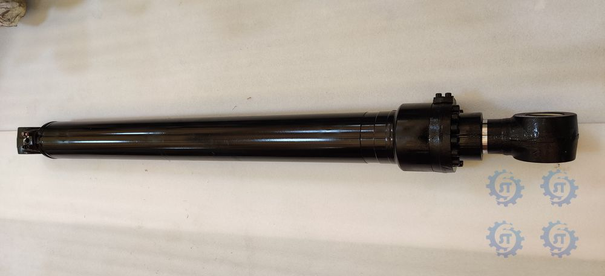
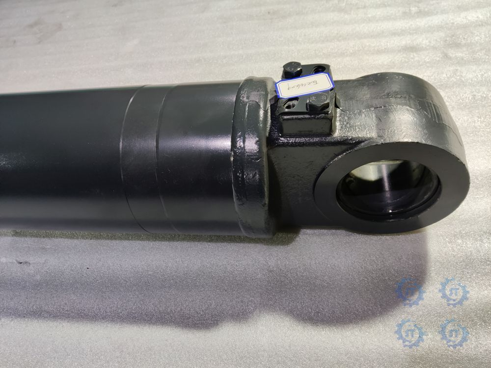
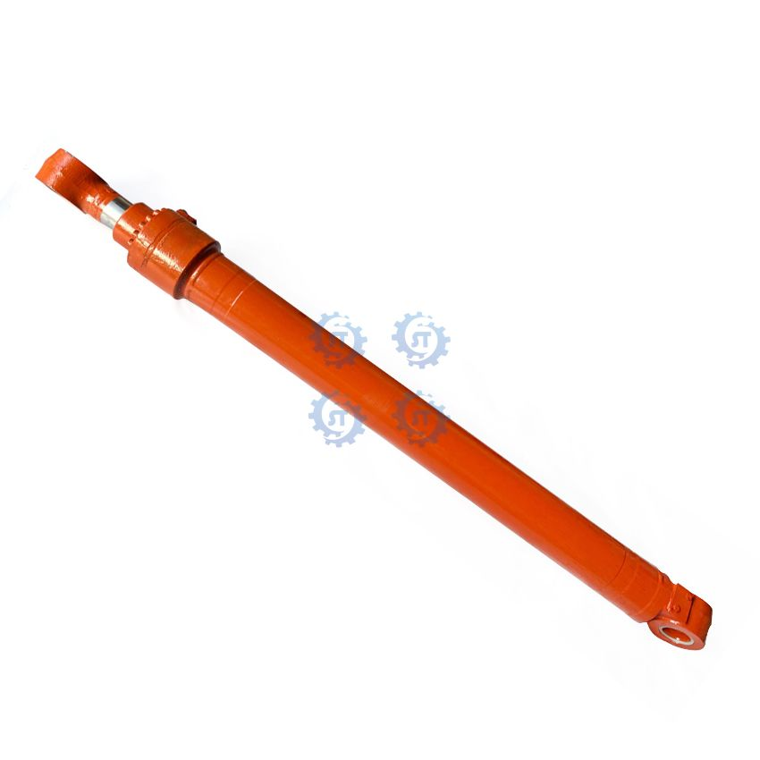
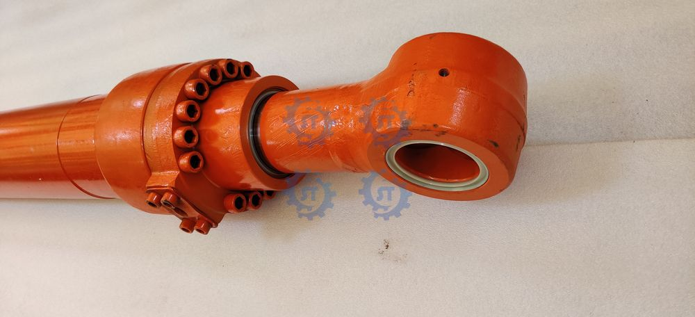
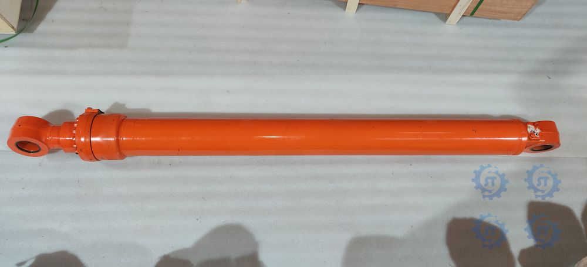
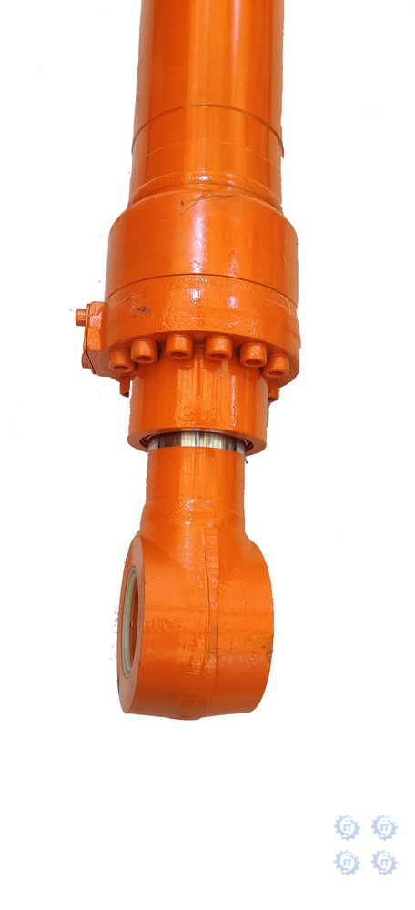
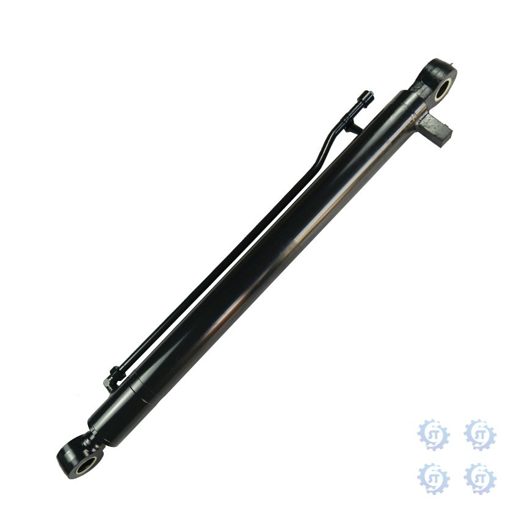
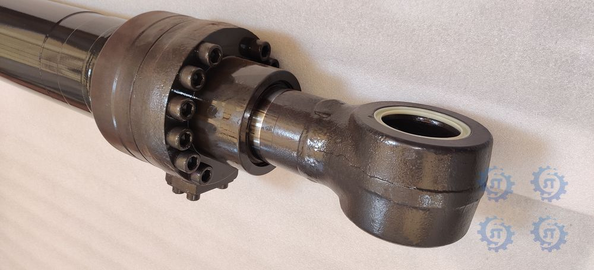
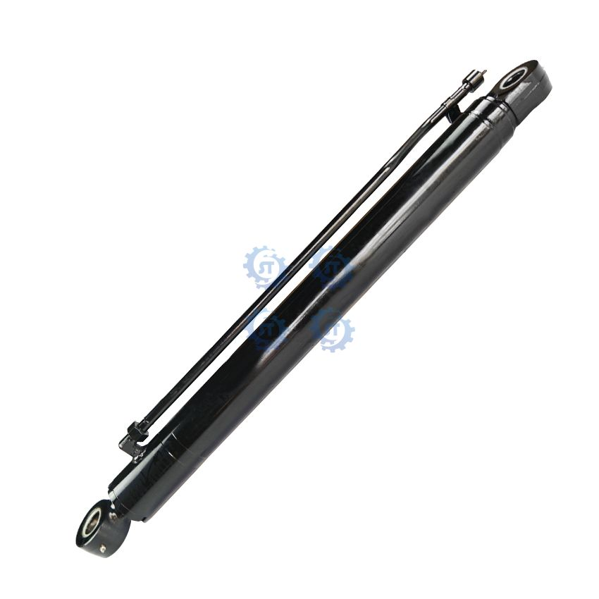

Caterpillar E320D Arm Cylinder
Part number: To be confirmed
Caterpillar excavator hydraulic cylinder assembly (arm), supplied by SongTe with customization support.
Product Type
Complete Assembly
Condition
To be confirmed
Warranty
18 months
Lead Time
Please inquire
Compatible Models
For E320D
| Parameter | Value |
|---|---|
| Cylinder diameter | To be confirmed |
| Rod diameter | To be confirmed |
| Rod stroke | To be confirmed |
| Working pressure | To be confirmed |
Other parts in Hydraulic Cylinders

Arm Cylinder 9292426
Details →Arm Cylinder 204-3614
Details →
Doosan DH220-5 Arm Cylinder
Details →
Doosan DH225 Arm Cylinder
Details →
Doosan DH258 Arm Cylinder
Details →
Doosan DH300 Arm Cylinder
Details →Doosan DH300-7 Arm Cylinder
Details →
Doosan DH55 Arm Cylinder
Details →Doosan DX380 Arm Cylinder
Details →
Doosan DX60-9C Arm Cylinder
Details →
Sany SY215 Arm Cylinder
Details →